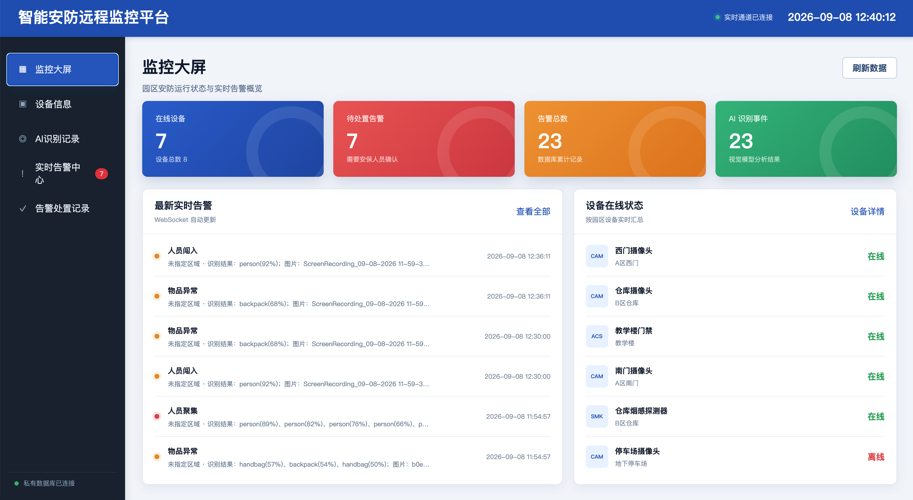
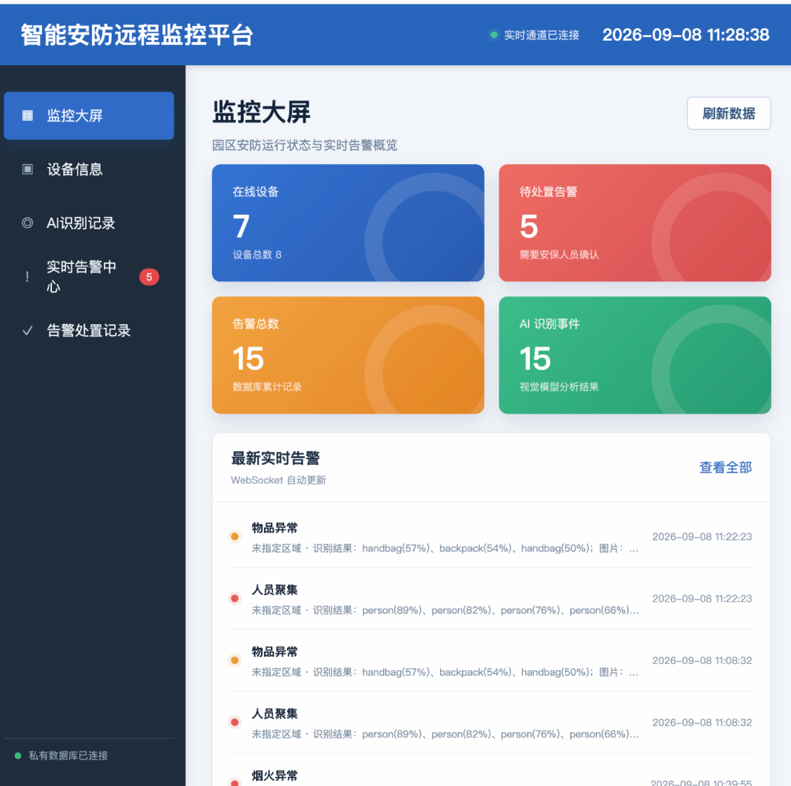
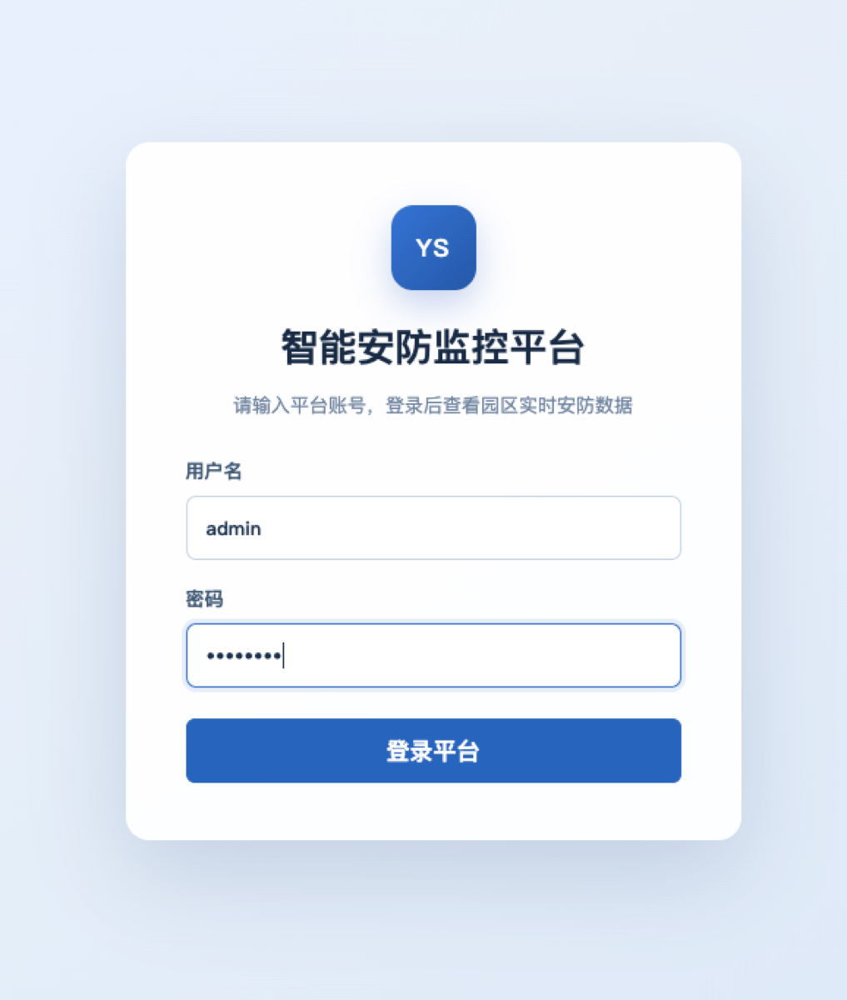
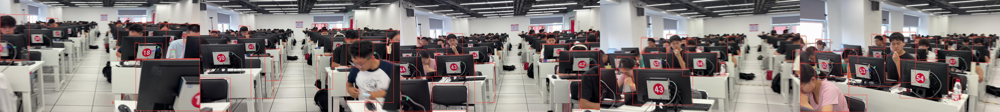

它要解决什么
监控场景中的识别结果若只停留在检测框，难以支撑后续处置。本项目将模型输出映射为业务告警，并让每条告警都带有现场证据与处置状态，形成可追踪的台账。
一个贯通视觉识别、规则判断、数据存储、实时推送与人工处置的全栈安防系统。平台既能手动分析图片，也能持续扫描图片与视频目录，以 YOLOv5 识别结果触发业务告警，并将状态变化实时同步到 Web 与 HarmonyOS 终端。

这是一套将目标检测转化为可处置告警的全栈安防平台，走通「AI 识别 → 规则映射 → 数据库落盘 → WebSocket 实时推送 → 前端大屏处置」的完整闭环。识别有两个入口：手动填写图片地址，或把图片与视频投进 ai-watch 目录，由后台线程每 2 秒扫描一次模拟摄像头。Spring Boot、MySQL 与 WebSocket 负责状态保存与实时同步，Web 端与 HarmonyOS 客户端用于复核与处置。
监控场景中的识别结果若只停留在检测框，难以支撑后续处置。本项目将模型输出映射为业务告警，并让每条告警都带有现场证据与处置状态，形成可追踪的台账。
手动入口把图片地址转发给 AI 服务；目录入口由后台每 2 秒扫描 ai-watch，识别后主动推送结果并把源文件归档到 processed。检测结果经规则映射为烟火异常、人员聚集、人员闯入、车辆异常、动物进入或物品异常，事务落库后再通过 WebSocket 广播至各端。
推理侧为 FastAPI 与 YOLOv5（COCO 与烟火双模型），业务侧为 Spring Boot 3.3 与 MySQL 8，实时推送使用 WebSocket；界面由 Vue 3 与 ArkTS / ArkWeb 构建。Vue 采用本地静态版本由 Spring Boot 直接托管，克隆即可运行；另提供 Docker 一键部署。
监控大屏、设备信息、AI 识别记录、实时告警中心与告警处置记录五个页面均已实现，并附有代码详解教程。实际检测效果需结合所用数据集、置信度阈值与部署环境评估。
管理端由 Spring Boot 直接托管静态页面，克隆下来即可运行，不需要额外的 Node.js 环境。


从“模型看见了什么”到“安保人员完成处置”，每一步都保留业务状态与现场证据。
支持网络图片、文件上传与视频抽帧；视频最多抽取 5 帧逐帧检测，并生成汇总告警。
以 COCO 与烟火检测模型覆盖人员、车辆、物品、动物、烟雾和火焰等现场对象。
把模型类别转换为烟火异常、人员聚集、人员闯入、车辆异常、动物进入与物品异常。
数据库事务提交后再通过 WebSocket 广播，避免页面收到尚未落盘的短暂状态。
告警按照“待处置 → 处置中 → 已关闭”流转，并阻止对已关闭记录进行重复操作。
自动保存检测框图片与视频帧拼接图；目录识别完成后将源文件归档至 processed。
浏览器主动提交与 ai-watch 自动扫描共享同一条后端业务链路。
图片 URL、上传文件，或模拟摄像头目录中的图片与视频。
完成推理、检测框绘制与多帧对象汇总。
规则映射、状态校验、事务控制与接口编排。
设备、告警、处置状态和现场图片持久化。
把新告警与状态变化广播到在线管理终端。
管理端呈现实时运营状态，AI 输出保留检测框，便于复核模型判断。

客户端结合 WebView、设备侧感知与 HarmonyOS 分享能力，支持移动端处置。
输入局域网平台地址即可连接；客户端包含加载进度、返回导航与演示账户自动登录。
根据左右手握持状态调整悬浮功能按钮位置，让单手操作更自然。
支持碰一碰分享与隔空抓取，将受控演示会话快速传递到附近设备。
前端、业务后端、AI 服务、数据库与设备端协同组成完整工程。